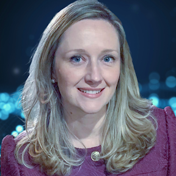

Legado Zweig entre passado e futuro
(Re)leituras e diálogos decoloniais sobre Stefan Zweig, situando obra e biografia no entrecruzamento entre memória e presente, Europa e Brasil, com produção de materiais didáticos autorais.
Ensino-aprendizagem de línguas, formação de professores e autoria didática na era digital.

Sou professora do Departamento de Teoria e Prática de Ensino da Universidade Federal do Paraná (UFPR), com atuação centrada no ensino-aprendizagem de línguas — sobretudo na Metodologia e Prática de Ensino de Alemão como Língua Estrangeira.
Graduada em Letras Alemão e Português pela UFPR (2009), sou mestre pelo programa bilateral entre a UFPR e a Universität Leipzig (2011) e doutora em Letras pela UFPR (2023). Entre 2011 e 2017, atuei como docente na Unicentro (Campus Irati), onde coordenei o Escritório de Relações Internacionais.
Atualmente sou vice-coordenadora do Centro Austríaco UFPR, coordenadora do subprojeto PIBID Letras Interdisciplinar — Português como língua de acolhimento, Inglês e Alemão — e Embaixadora do Programa DAAD-Dhoch3 no Brasil.
Minhas pesquisas concentram-se em material didático para o ensino de línguas estrangeiras, formação de professores, competência digital, tecnologias educacionais e plataformização do ensino.
Tese: “De volta para Tempos Modernos: a incompatibilidade programática entre competência digital e plataformização do ensino”. Orientação: Prof. Dr. Paulo Astor Soethe.
Dissertação: “Ein Brasilianer im Lehrwerk: kulturbezogene Analyse von Aspekten eines brasilianischen Lehrwerks für Deutsch als Fremdsprache”. Bolsista CAPES.
Licenciatura, com iniciação científica em interculturalidade e ensino de literatura alemã.
Coordenação de projetos que articulam formação docente, autoria didática e tecnologias digitais no ensino de línguas.
(Re)leituras e diálogos decoloniais sobre Stefan Zweig, situando obra e biografia no entrecruzamento entre memória e presente, Europa e Brasil, com produção de materiais didáticos autorais.
Formação docente, práticas de ensino, autoria didática e tecnologias digitais como dimensões indissociáveis da construção de saberes e materiais didáticos decoloniais e contextualmente responsivos.
Formação inicial e continuada de professores de português como língua de acolhimento, inglês e alemão, com Planos de Docência Plurilíngue e forte integração da cultura digital.
Investigação de ferramentas digitais e tecnologias educacionais na formação docente, incluindo o uso de eye-tracking para estudar o processamento em língua estrangeira.
Coordenação do curso de segunda licenciatura em Letras Alemão para professores da rede pública, em Joinville (SC).
Reflexões, discursos, metodologias, produção e análise de recursos pedagógicos para o ensino de inglês e alemão como línguas estrangeiras.
Uma seleção da produção bibliográfica. A lista completa está disponível no Currículo Lattes.
Sites e materiais autorais sobre o ensino-aprendizagem de línguas, cultura e autoria didática — em acesso aberto e circulação ampliada.
Língua, cultura e literatura austríacas: tradução e materiais didáticos para o ensino de alemão.
centroaustriaco.com →Materiais didáticos autorais para o ensino-aprendizagem de línguas, publicados em acesso aberto na plataforma MECRed.
Publicações, projetos e produção científica reunidos em um só perfil.
researchgate.net →Para colaborações acadêmicas, palestras, orientações e projetos.